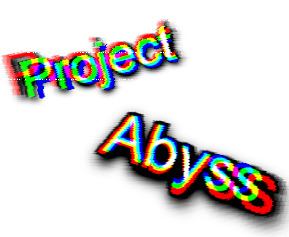

drifter's favorite things
Computer Science Project & Personal Website

Project Abyss: My own website
Project Abyss was something I started on 06/01/2023. (MM/DD/YY) The main point of the website is to be an online riddle, otherwise known as an ARG. It's meant to be an online intermediate online riddle, meaning around the difficulty of something like nigmapedia. The website was created after the abandonment of my other website, which will be unspecified due to it being... really bad. To this day, I am still actively working on it, but not mainly. I still have other things to do, such as schoolwork. I host this website on a free hosting service called Surge. It's pretty nice but can shut down a bit often.
Alex Rider: Book Series
Alex Rider was the second series I picked up while
trying to get back into reading in Grade 9. The first
series I read was kind of disappointing, but this one
was my favorite, and I've read every single book of the
14-book series so far. The book is basically about a
British teenage spy helping in all sorts of dangerous
missions. I guess I'm a sucker for teenage books,
because I managed to read all of these within the year.
Here's a few things I like about it:
- The Action: While there's a few things here and there, the action is overall very good.
- Relatable: The author manages to make the main character actually feel like a teenager.
- Story: It's interactive, entertaining, and makes me want to wait for the next book to come out.

Niagara Falls: My vacation
In July of 2024, I went on vacation to many Canadian cities, including Toronto. There, I visited Niagara Falls, the coolest thing I've seen for a long time. I managed to get up close with a tour boat, and it is mesmerizing and fun to get splashed on. It's a once in a lifetime visit, and I'm glad I got to visit with my parents.